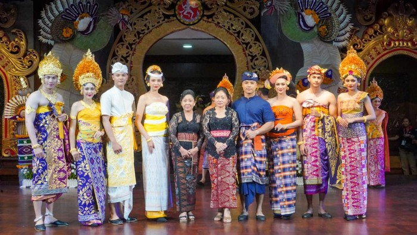

PAKAIAN ADAT BALI

1. Payas Agung
Baju adat Bali yang lengkap dan terlihat mewah adalah Payas Agung.
Dahulunya, pakaian ini digunakan untuk kalangan brahmana, ksatriya, dan waisya.
Baju ini sekarang digunakan oleh pengantin dalam upacara pernikahan.
Payas Agung menggambarkan keindahan, warnanya juga cerah sehingga mencirikan kebahagiaan dan kegembiraan.
Tiap daerah memiliki kekhasan, namun masih tetap sesuai pakem.
Contohnya Payas Agung adat Medeeng Singaraja
(Buleleng) yang berbeda dengan Payas Agung adat Asak Karangasem.
Pengantin wanita mengenakan tapih atau sinjang prada selain warna kuning dan putih,
kamen prada, sabuk prada, sabuk toros, dan selendang prada warna kuning.
Sedangkan, pengantin pria mengenakan aksesoris berupa gelung agung dan mengenakan rumbing di telinga, memakai badong,
gelang nagasatru dan gelang kana, serta cincin bermata merah.
Baju yang dipakai adalah kain kancut prada, kampuh prada, dan umpal prada.
Payas Agung juga digunakan oleh manggala/pangarep yang diupacarakan dalam upacara manusa yadnya
dan sebagai yajamana pada upacara yang lain.
2. Payas Madya
Pakaian Payas Madya adalah pakaian adat tingkat menengah.
Biasanya dipakai dalam upacara potong gigi dan ngidih.
Upacara potong gigi adalah penyucian diri ketika sudah dewasa dan akan memasuki jenjang pernikahan.
Sedangkan ngidih yaitu ketika laki-laki meminang dan datang ke rumah calon pasangan.
Untuk upacara ini, payas madya memiliki ciri penataan rambut menggunakan gelung moding.
Selain itu, juga menggunakan semi dari malem, dan memakai aksesoris rambut berupa bunga kompyong,
7 sasak lepas, dan 21 bunga sandat emas. Busananya menggunakan kamen songket asli tenun bali,
lengkap dengan sabuk prada belah ketupat 4 warna.
Para wisatawan yang mau memasuki kawasan suci, seperti pura, situs peninggalan kerajaan tertentu dan lain-lain,
juga harus memakai pakaian madya untuk menghormati dan menjaga kesucian tempat tersebut.
Secara sederhana, ini hanya terdiri dari tiga bagian pokok.
Pertama adalah kamben, yaitu selembar kain yang dililitkan pada tubuh bagian bawah.
3. Payas Alit/Payas Nista
Payas alit atau payas nista adalah baju adat Bali yang
paling sederhana dan bisa dipakai sehari-hari,
termasuk upacara adat harian di pura.
Yang dikenakan biasanya hanya menggunakan kebaya dan songket.
Laki-laki pun hanya menggunakan kemeja putih dan dilengkapi dengan kamen serta udeng.
|